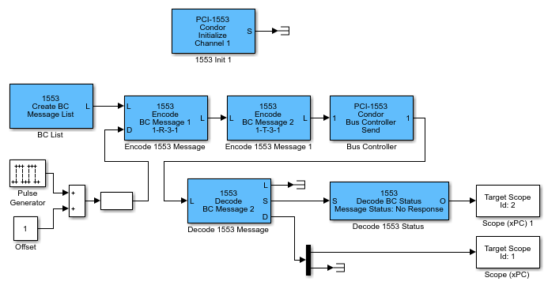

The example in this topic uses PCI-1553 blocks. It describes how you can use a Bus Controller in a model. This model is a simple example of how to set up a short sequence of two messages, send them, and collect the response data.
You can run this example on a target computer that has a PCI-1553 board. If your target computer uses a different board, such as a QPCI-1553 board, replace the PCI-1553 blocks with the blocks for your board.

The PCI-1553 Initialize block configures a Bus Controller on
channel 1 of the board. This block also tells the board to reserve five message buffers.
This number must be at least as large as the longest list of messages that you
send.
The Create BC Message List block allocates an empty list of five message buffers in
Simulink®
Real-Time™ memory. Each
time this block executes, it sets the entire list of message buffers to
no-op messages. The Encode BC Message block fills
each message for the time step during which the message must be sent. To send only a
specific message at a specific time, enclose the Encode BC Message
block in an enabled subsystem.
The L signal is the message list, a custom data type consisting of
a pointer, message length, and special marker. The model passes the L
signal through the Encode BC Message blocks. From there, the signal goes to the Bus
Controller Send block, executing the Encode blocks before the Send block.